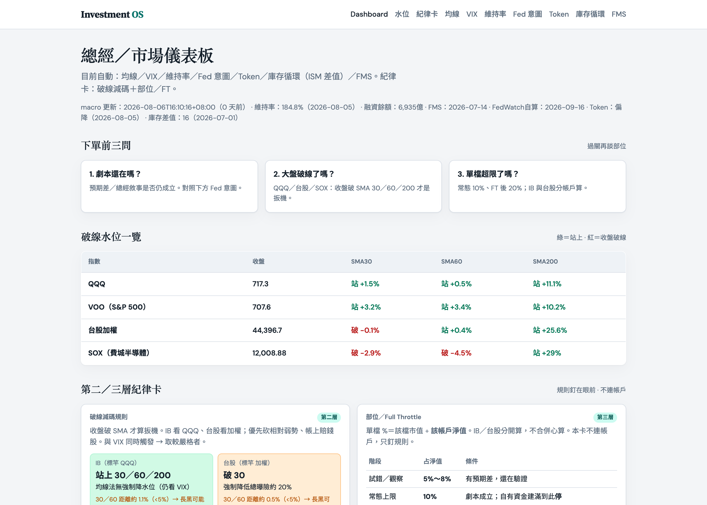
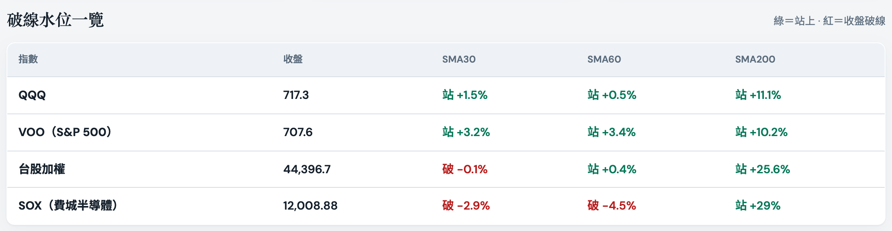
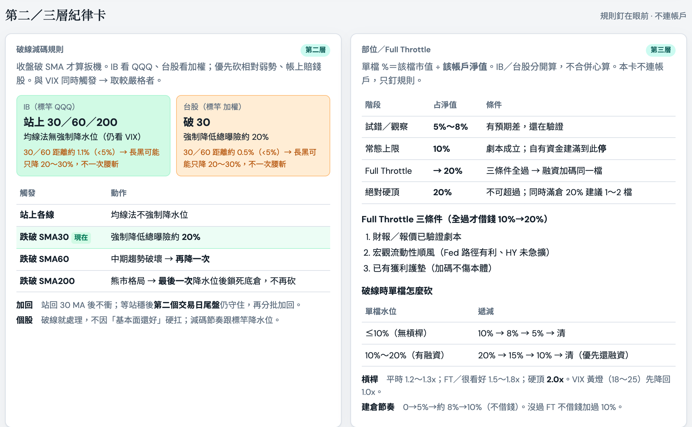
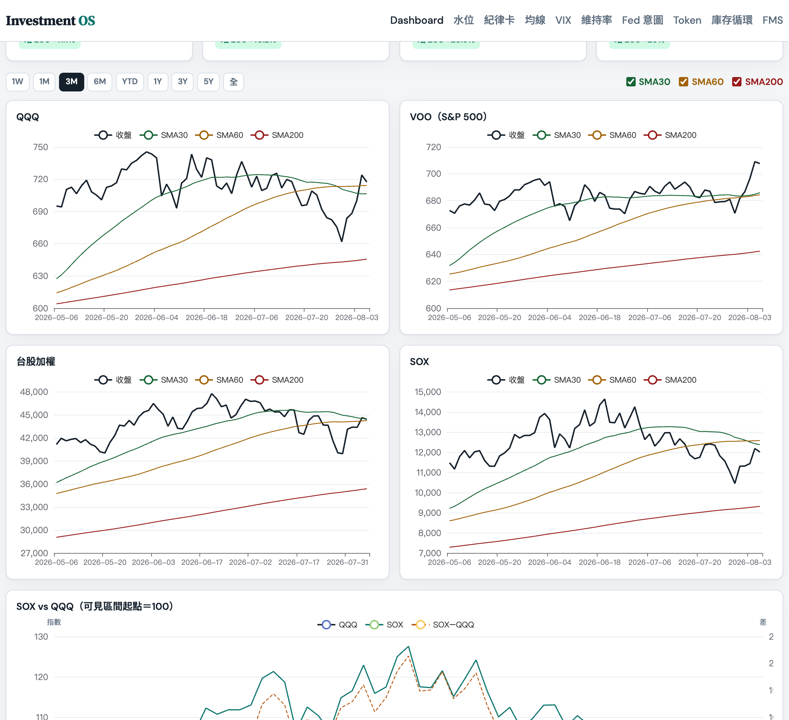
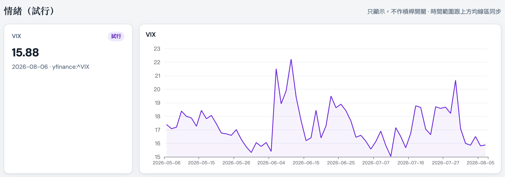
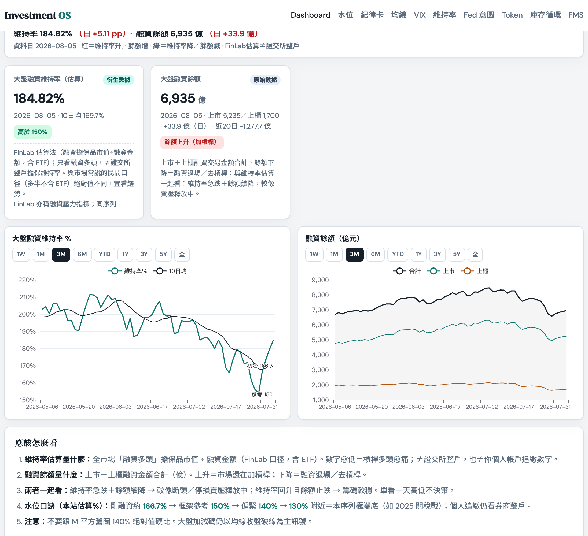
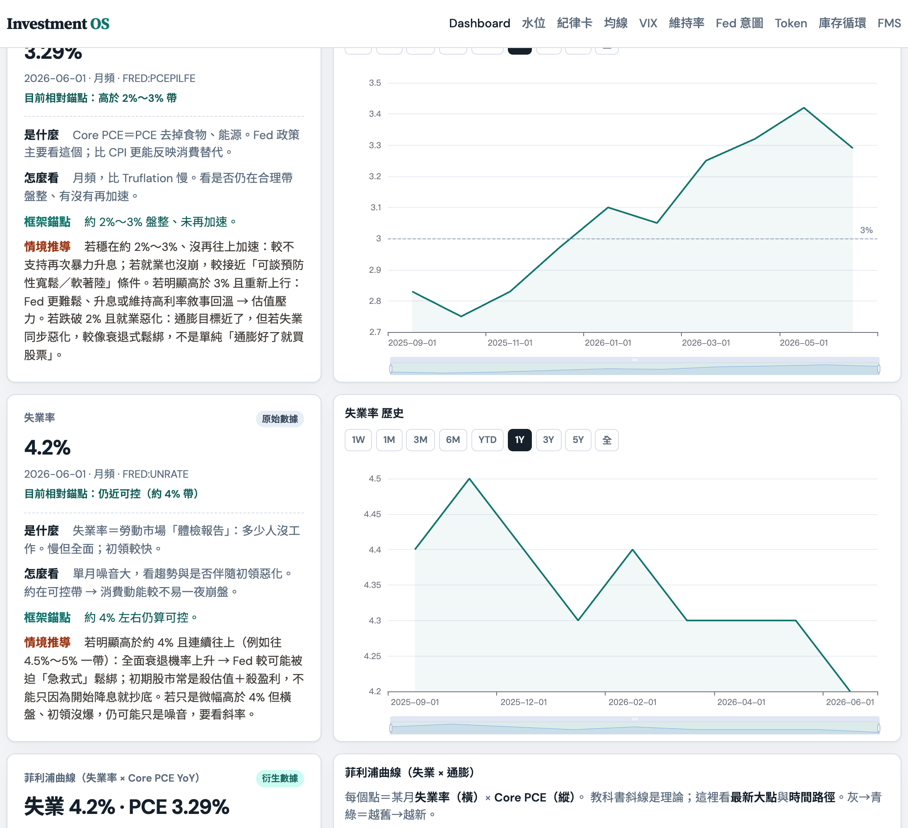
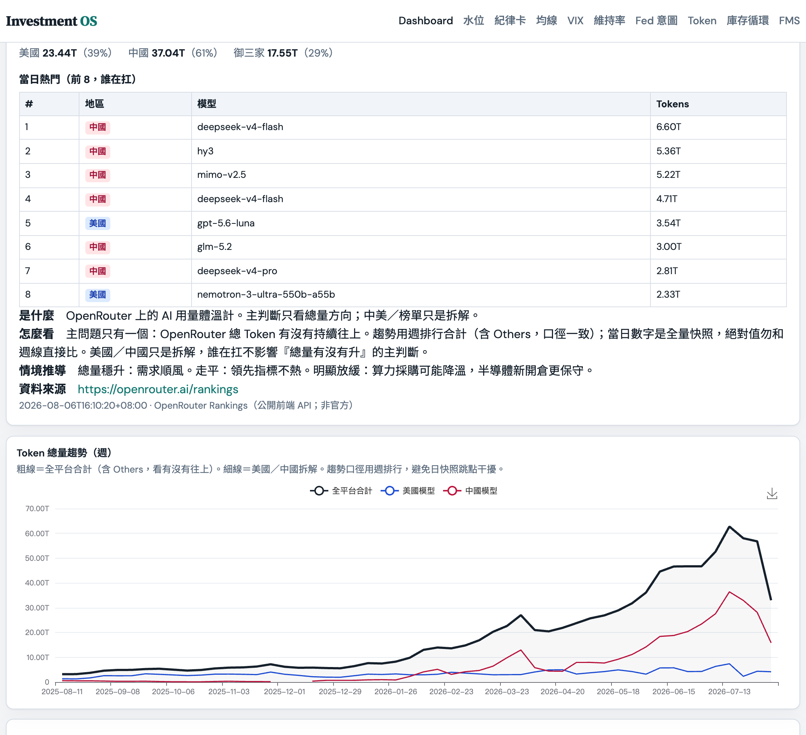
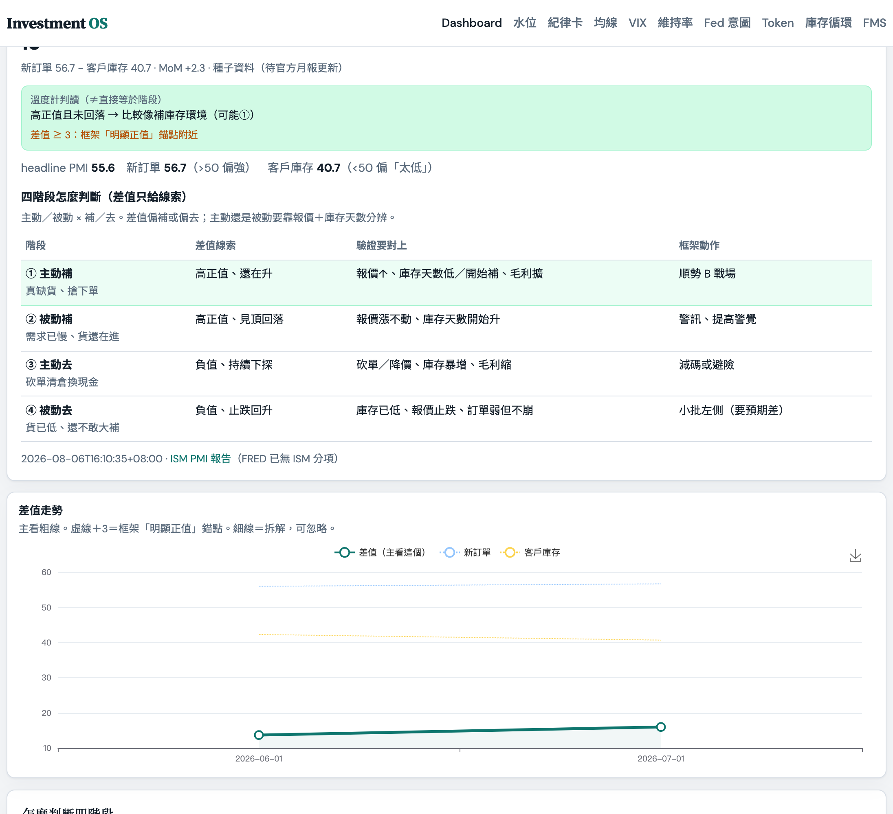
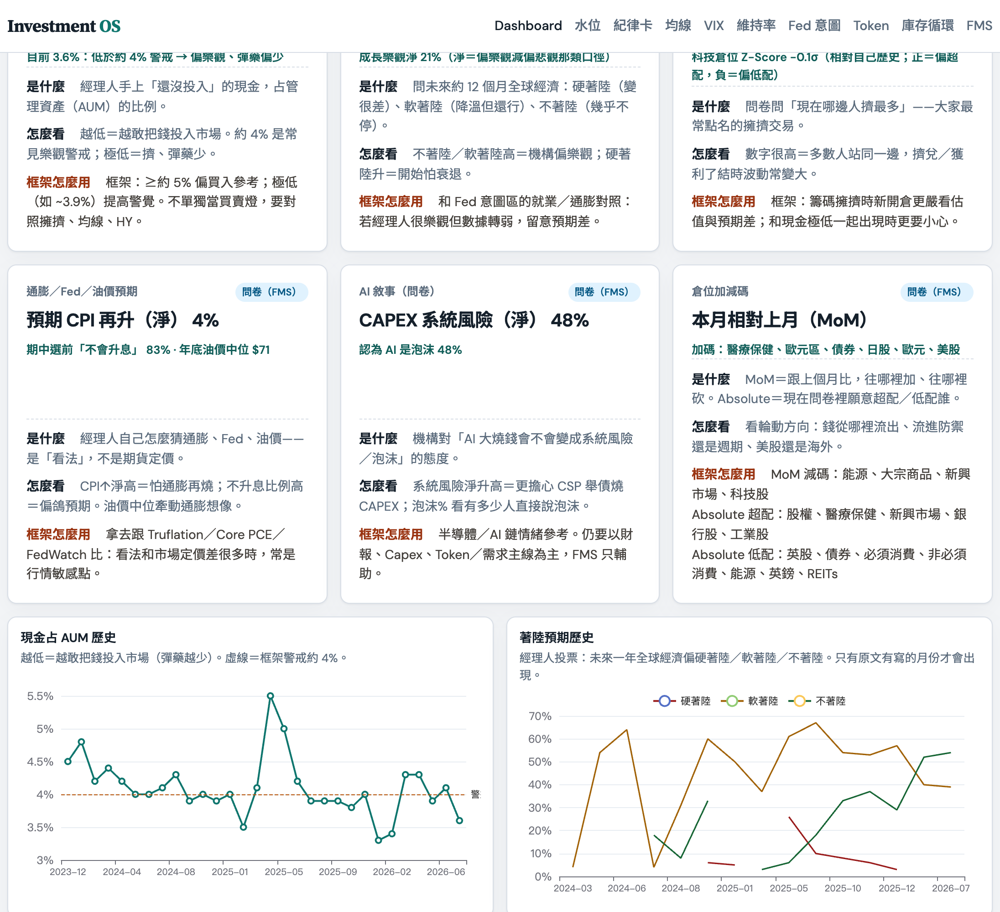

1. 一句話定位
Investment OS 不是財經新聞站，也不是券商看盤軟體——它是把「我的投資框架」變成每天可執行儀表板： 公開數據自動抓 → JSON → 靜態網頁顯示燈號與圖表；不接個人帳戶、不下單。
靈感接近「財經 M 平方」式總經儀表，但內容完全對齊個人框架： 下單前三問、SMA 破線減碼、Fed 意圖、庫存循環差值、Token 趨勢、FMS 等。
2. 為什麼要做這個網站
痛點
- 框架寫在 Markdown 裡很完整，但下單當下不容易一眼對照。
- 總經數據散落 FRED、Yahoo、ISM、OpenRouter、FinLab……手動查很慢。
- 需要把「規則」和「現況數字」放在同一畫面，降低情緒交易。
目標
對自己
每天打開就能看破線水位、流動性、補／去庫存線索與紀律卡。
對框架
網站只呈現已定案規則，不另創一套買賣邏輯。
3. 產品長什麼樣
首屏：品牌導覽、資料更新狀態、下單前三問、破線水位總表、紀律卡。

破線水位與紀律
第二層看大盤是否收盤破 SMA 30／60／200；第三層釘住單檔部位上限（常態 10%、Full Throttle 後至 20%）。 規則與即時水位放在同一區，避免「記得規則但忘了看線」。


4. 系統架構
核心是「資料管線 + 靜態前端」，刻意維持簡單、可本機常駐。
- 伺服器：macOS launchd 常駐，目錄放在 Application Support（避開 Desktop 中文路徑權限問題）。
- 同步：
sync_www.sh把專案裡的 HTML／JS／CSS 同步到常駐目錄；資料以常駐目錄為準。 - 前端：無框架，純
index.html+app.js+styles.css，讀 JSON 渲染卡片與圖表。
5. 資料來源與自動更新
| 區塊 | 來源 | 頻率 | 備註 |
|---|---|---|---|
| 利率／HY／就業／通膨 | FRED API／公開 CSV、Truflation | 日／週／月 | 需 FRED key（無 key 仍可抓部分 CSV） |
| QQQ／VOO／SOX／台指／VIX | yfinance | 日（盤後快照） | SMA 30／60／200 本地計算 |
| 台股融資維持率／餘額 | FinLab | 平日盤後 | 估算口徑，標參考、非證交所整戶維持率 |
| Token 用量趨勢 | OpenRouter Rankings | 日 | 代理指標，非官方模型商數據 |
| 庫存循環（ISM 差值） | ISM 製造業 PMI 分項 | 月 | 差值＝新訂單 − 客戶庫存 |
| FMS | 美股 Insight 整理版抽取 | 月 | 非日爬；跟內容產出流綁在一起 |
| Fed 意圖（人工卡） | 手動更新 manual.json |
事件驅動 | 劇本判斷，不是自動燈號 |
排程大致為每天多個時點跑 macro／Token／庫存等，台股相關另在平日 16:10 更新。 頁面約每 5 分鐘重讀 JSON。Mac 睡眠時排程會跳過——醒來後可手動跑一次更新腳本。
6. 功能模組說明
6.1 大盤均線（主訊號）
框架第二層核心：看 QQQ／VOO／台股／SOX 相對 SMA 30・60・200。 只有收盤破線才算扳機；可切時間範圍、開關均線，並看 SOX vs QQQ 相對強弱。

6.2 VIX 與台股融資維持率
VIX 標為試行／參考，不機械控制槓桿。 融資維持率與餘額用來觀察台股籌碼壓力與去槓桿節奏，同樣不作自動買賣燈。


6.3 Fed 意圖與證據牆
把「錢的價格／數量、通膨、就業、殖利率、HY 利差」收成證據牆， 用來判斷較像預防性還是衰退式鬆綁，並對照人工 Fed 意圖卡。

6.4 Token 用量趨勢
用 OpenRouter 公開 rankings 當 AI 用量代理指標：主看總量是否持續往上，美／中拆解為輔。 用來輔助這一輪「算力／CSP Capex」敘事，不是下單訊號。

6.5 庫存循環（ISM 差值）
衍生指標 差值＝新訂單 − 客戶庫存。正值偏高偏像補庫存環境；縮小或轉負則動能轉弱。 差值只是溫度計，四階段（主動／被動 × 補／去）還要用報價與庫存天數驗證。

6.6 FMS（機構經理人問卷）
從美股 Insight 整理文抽取 BofA FMS：現金水位、擁擠交易、著陸預期等。 用途是對照「機構怎麼想」與自己證據牆，找預期差——同樣不是買賣燈。

7. 設計原則與鐵則
| 原則 | 做法 |
|---|---|
| 框架唯一真相 | 指標定義、破線規則、部位上限以專屬框架草稿為準，網站不另創邏輯 |
| 公開數據優先 | 不登入券商、不算個人部位；FinLab／FRED key 只存在本機 .env |
| 主訊號 vs 參考 | 均線破線＝可觸發減碼規則；VIX／FMS／籌碼類＝參考 |
| 失敗不覆蓋 | 抓數失敗保留舊 JSON，避免儀表板被空檔洗掉 |
| 說明寫在旁邊 | 每個區塊附「是什麼／怎麼看／情境推導」，降低之後自己也看不懂的風險 |
8. 技術棧
前端
HTML／CSS／原生 JavaScript、ECharts 5、本機字體與自訂設計系統（非套版模板）
後端／資料
Python 3 抓數腳本、pandas／yfinance／requests、FRED、FinLab、launchd 排程
部署形態
目前：本機靜態伺服器（綁定 127.0.0.1）。未對外公開。
內容對齊
專屬投資框架 Markdown、建站備忘錄、三源整理產出流（FMS 等）
9. 現況、限制與下一步
現況（可用）
- 主要模組已上線並自動更新：均線、利率／就業通膨、VIX、維持率、Token、庫存差值、FMS、紀律卡。
- 本機常駐服務與更新排程運作中。
已知限制
- 僅本機：外人無法直接開啟 127.0.0.1（若要公開需另做精簡公開版／Pages）。
- FedWatch 套件：排程環境偶發缺依賴，不影響其餘模組。
- 庫存歷史尚短：月頻累積中，趨勢圖會隨月份變完整。
- 人工卡需維護：Fed 意圖仍要自己在重大事件後更新判斷。
可選下一步（非必須）
- 台股三大法人等籌碼參考區
- 框架精華／估值方法百科靜態頁
- 若要給外人點：GitHub Pages 精簡公開版（拿掉 key 與過度個人判斷）
這份報告的重點不是「做了一個很炫的網站」，而是： 把投資紀律工程化——讓規則、數據、圖表在同一個日常入口對齊。